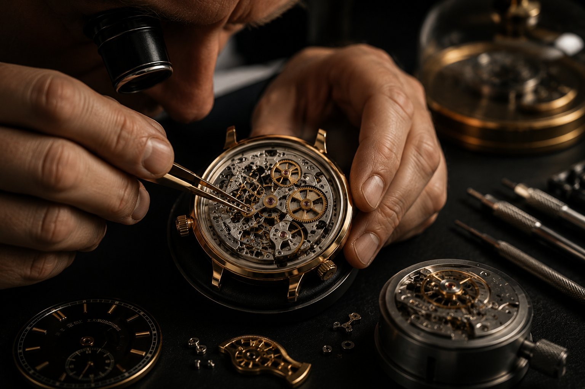
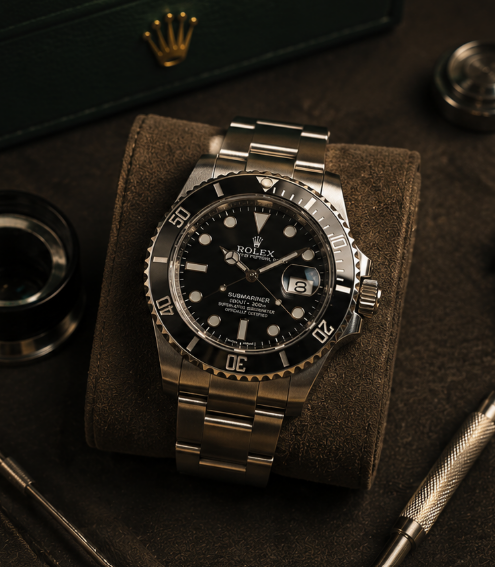

Standard
From £189
Ideal for everyday watches due for routine maintenance.
- Full movement service
- Case exterior clean
- Accuracy test report
- 2–4 week turnaround
Home / Services / Watch Servicing
A complete watch service restores accuracy, reliability, and longevity to your timepiece. Whether you wear a vintage manual wind, a daily automatic, or a cherished heirloom, our certified watchmakers follow manufacturer-aligned procedures to bring your movement back to peak performance.
Every service begins with a complimentary assessment. We inspect the case, crown, crystal, and movement before providing a transparent quote - no hidden fees, no unnecessary upsells. Once approved, your watch enters our controlled workshop environment where each component is handled with precision tools and decades of expertise.
From disassembly and ultrasonic cleaning to fresh lubrication and timing regulation, we treat every watch as if it were our own. Upon completion, your timepiece undergoes multi-point quality checks and optional water-resistance testing before being returned in protective packaging.
Every servicing tier includes the essentials your movement needs to run accurately for years to come.
2–4 weeks from drop-off
7–10 working days
5–7 working days with priority queue
Complex vintage or chronograph movements may require additional time - we will advise during your free assessment.
All prices include assessment, labour, and our 90-day guarantee. Parts quoted separately if required.
From £189
Ideal for everyday watches due for routine maintenance.
From £279
Our most popular option for watches you rely on daily.
From £449
For luxury, vintage, and collector-grade timepieces.
Final pricing depends on movement complexity and parts required. A detailed quote is provided before any work begins.
See the difference a professional service makes to accuracy, appearance, and reliability.

